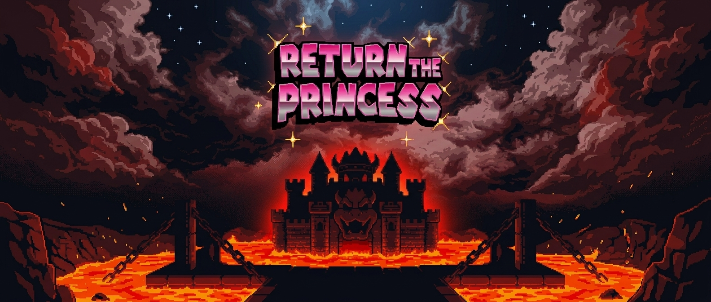

Return The Princess
La princesa ha sido capturada en lo más profundo del castillo de Bowser. Solo tú puedes atravesar el laberinto mortal y traerla de vuelta. Elige sabiamente... o perece en el intento.
Comenzar aventura
La princesa ha sido capturada en lo más profundo del castillo de Bowser. Solo tú puedes atravesar el laberinto mortal y traerla de vuelta. Elige sabiamente... o perece en el intento.
Comenzar aventura